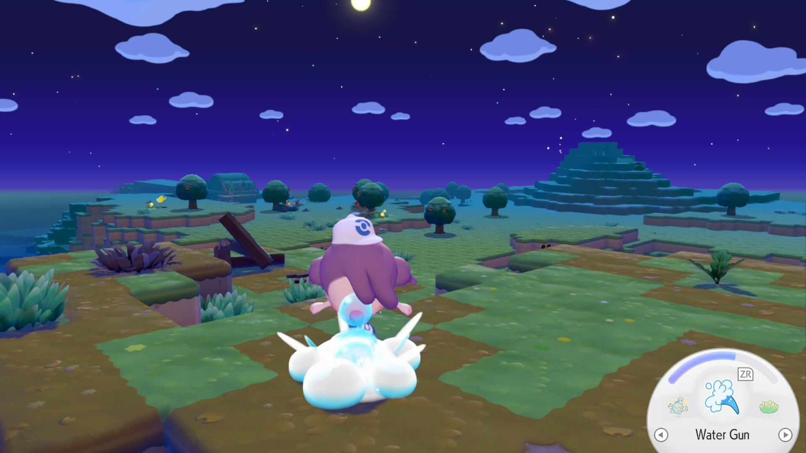
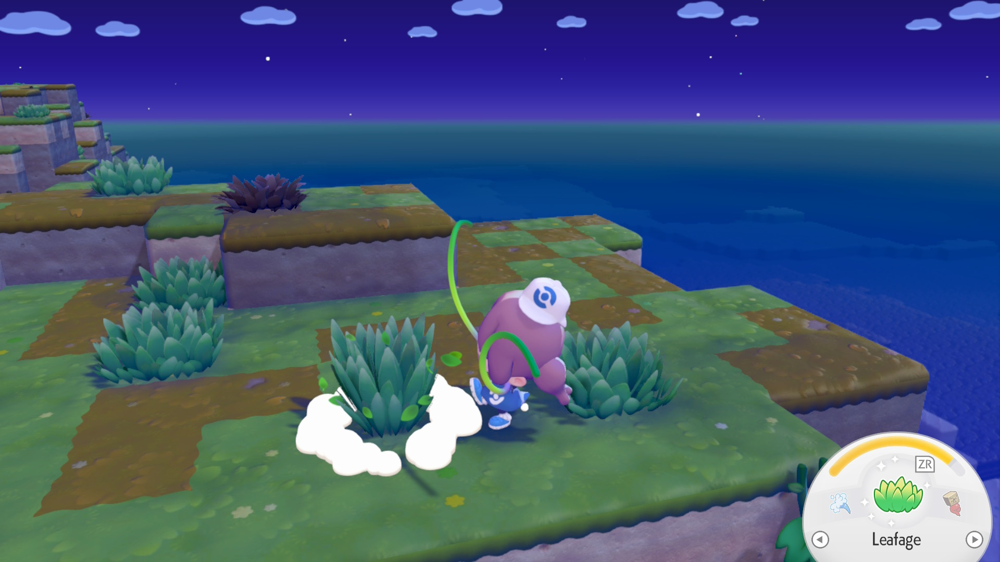
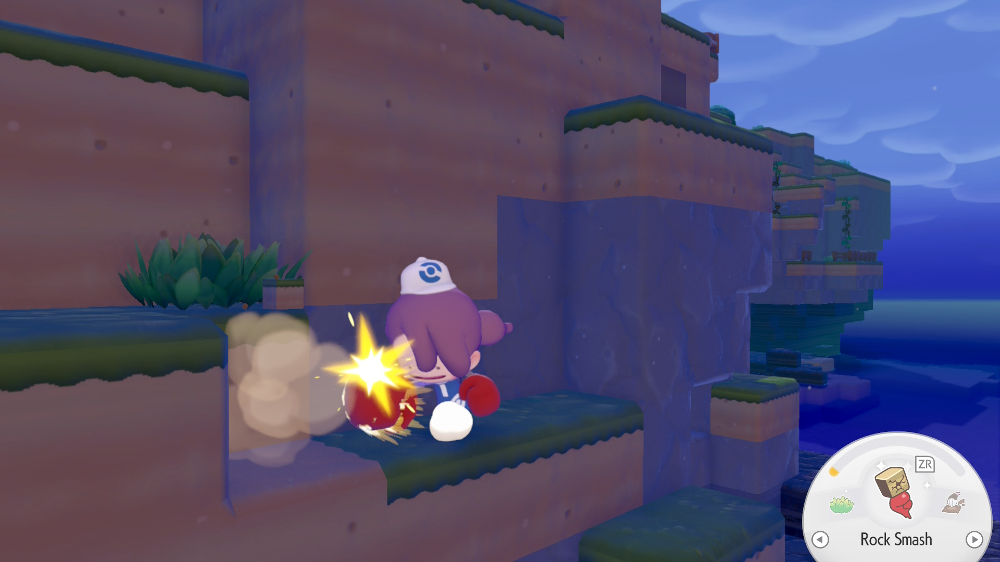

What is Water Gun Used For?
Water Gun is the first ability you unlock in Pokémon Pokopia. The move is learned from Squirtle at the beginning of the game.
The move sprays water in a four block plus shaped radius when used and can be upgraded by eating soup. The upgraded move sprays water across (find this out) blocks.
Water Gun has a different effect based on what you use it on. The move's most common use is watering dry grass, trees, flowers, and crops.
How To Use Water Gun
To use Water Gun, set the move on your cicle-shaped abilities menu. This is done with the left and right D-pad buttons or by holding down the L button and using the left joystick to select Water Gun.
To activate the move, press the ZR button. The affected blocks will be highlighted.

Fun Fact About Water Gun
- If you use Water Gun on a canvas Smearguru has painted, it will be reverted to a blank canvas.
What is Leafage Used For?
Leafage is the second ability you unlock in Pokémon Pokopia. The move is learned from Bulbasaur after completing the request: “Insert name”.
Leafage creates tall grass on the block in front of you when used. This is useful for creating Pokémon habitats or decorating.
The upgraded move (achieved by eating salad) can affect blocks in a 2x2 square and can also be used to create duckweed or moss.
The type of plant created with Leafage depends on the block you use the move on. The table below shows the plant associated with each block type.
| Type of Block | Plant Created With Leafage |
|---|---|
| Ordinary Soil/Field Grass | Green Tall Grass |
| Seashell Soil/Seashore Grass | Yellow Tall Grass |
| Striped Soil/Alpine Grass | Red Tall Grass |
| Pure-white Soil/Sky-high Grass | Pink Tall Grass |
| Water | Duckweed |
| Mossy Soil/Any Stone Type | Moss |
How To Use Leafage

What is Rock Smash Used For?
Rock Smash is a move unlocked in the early game of Pokémon Pokopia. It is learned from Hitmonchan during the request (INSERT NAME).
Rock Smash breaks the block you use it on. Some blocks can only be broken with the upgraded move, which can be achieved by eating hamburger steak.
How To Use Rock Smash
